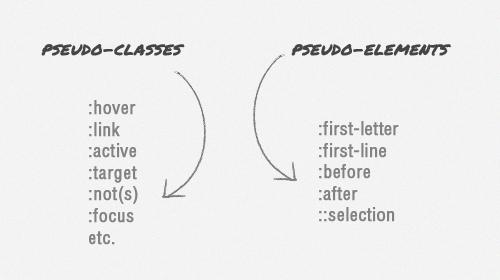

早期css只有伪类，我们见得最多的就是 :hover，:link，后来出现了类似:before，:after，当初就顺势把这也叫伪类，其实这是错误的。
伪类和伪元素
图1 伪类和伪元素
伪类和伪元素的出现，其实就是为了偷懒而存在的，因为他们偷的懒不一样，所以才有不同的命名。
故名思议，伪类是偷类的懒，伪元素是偷节点元素的懒，这么说不太形象，那么我们举点例子说明。
伪类实现不用写className
伪元素实现不用增加额外节点元素
伪元素虽然实现了虚拟节点的功能，但是它却不包括在dom树中
伪元素的高级偷懒
在所有p元素前面虚构一个内容是#的节点元素，比你插入无数个<span style="color:red">#</span>节点要好很多
猜测
以下结论都建立在猜测的基础上。
伪，冒充的意思，就像“伪军”，其实不管是伪什么，都是为节省被替换的东西，降低成本（开发和维护难度）。
关于:link，:hover，应该叫伪行为比较合适，因为他们是偷行为的懒，他们记录用户不同行为下的样式。
伪行为实现不写js事件实现行为
结语
通过对名称的介绍，我们现在已经了解了他们的用处，并且可以正确的使用他们，这就够了。